Draw how your records move, as a flowchart: conditions, waits, approvals,
emails, activities and record updates, without code — then follow every record on
the chart, step by step.
Odoo 16 – 20Community Edition
LGPL-3Free and open source
odoomates@gmail.comOdoo Mates
Contents
Twelve parts, from the first workflow to approvals running across your apps.
1Before you start
1.1What the app does
1.2Supported versions
1.3Installing
1.4Who can do what
1.5The words used in this guide
2Creating a workflow
2.1The Workflows list
2.2Starting from a template
2.3Ready-made workflows for your apps
2.4Starting from blank
3The designer
3.1The four areas
3.2Adding steps and arrows
3.3What is left to fix
4The Start: when a workflow begins
4.1The five ways to start
4.2Which records, how many runs, when to stop
5Logic and waiting steps
5.1Condition and End
5.2Wait
5.3Wait Until
5.4Approval
6Action steps
6.1Update Record and Create Record
6.2Send Email, Schedule Activity, Post Message
6.3Placeholders
7Publishing and versions
8Approvals in practice
8.1What the approver sees
8.2Approval on a button
8.3The Approvals menu
9Following the runs
10Your own templates
11Workflows for common needs
12When something looks wrong
12.1The usual questions
12.2How it works underneath
12.3Getting help
Part 1
Before you start
1.1 What the app does
Automation Studio adds workflows drawn as flowcharts. You draw what happens to
the records of a model — quotations, invoices, leads, purchase orders, contacts or any
other — step by step, without code. Each record then goes through the chart, and the
chart shows where it is and the path it took.
Approvals: a quotation above a discount, a purchase above an amount, a vendor
bill, or a click on Confirm waits for an approver.
Follow-ups and reminders: a call three days after a quotation is sent, reminder
emails once an invoice is overdue, a warning before a contract ends.
Record changes: set a field, create a linked record, post a message.
Tracking: every record's run, the step it is on and when it continues.
It is free and open source (LGPL-3), and builds on Odoo's own Automation Rules.
1.2 Supported versions
Module
Technical name
15
16
17
18
19
20
Automation Studio
om_automation_studio
✓
✓
✓
✓
✓
The same features on every version, for Odoo Community. This guide's screenshots are from
Odoo 19.
1.3 Installing
Put om_automation_studio in your addons folder.
In Odoo, turn on developer mode, open Apps and click
Update Apps List.
Search Automation Studio and install it. Odoo's Automation Rules
(base_automation) installs with it.
With demo data, the ready workflows of your apps (Sales, CRM, Purchase, Invoicing, Contacts) are
created as drafts, to try. Apps installed later get theirs too.
1.4 Who can do what
Set the level on each user, in Settings › Users › Automation
Studio:
Level
May
User
See the app and the Approvals menu, with their own approvals.
Supervisor
Also follow all workflows, runs and approvals; cancel and retry runs.
Administrator
Design, publish and pause workflows, manage templates, and answer any approval for its approver. The administrator user gets it at install.
Users without a level do not see the app, but approvals asked of them still arrive as
activities, answered from the banner of the record.
Full rights
As with Odoo's Automation Rules, a workflow changes records with full rights. Give the
Administrator level to trusted users only.
1.5 The words used in this guide
Word
Meaning
Workflow
A chart for one model: a Start, steps, and arrows between them.
Step
A box on the chart: a condition, a wait, an approval, an action.
Exit
Where an arrow leaves a step: Yes / No for a condition, Approved / Rejected / Time limit for an approval.
Run
One record going through one workflow.
Version
The chart as it was when published. Runs keep the version they started on.
Part 2
Creating a workflow
2.1 The Workflows list
Open Automation Studio › Workflows. Each line shows the model, how
it starts, its runs and its state: Draft, Running or Paused. The app's
other menus are Runs, Approvals and
Templates.
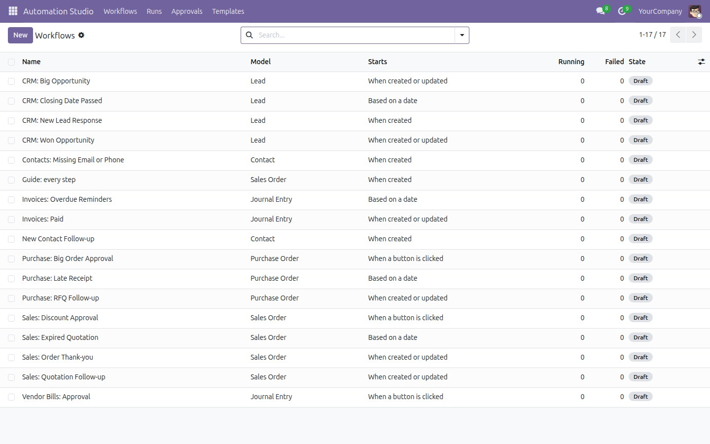
The Workflows list, with the demo workflows of Sales, CRM, Purchase, Invoicing and Contacts as drafts.
2.2 Starting from a template
Click New. A gallery opens with generic workflows that run on any model:
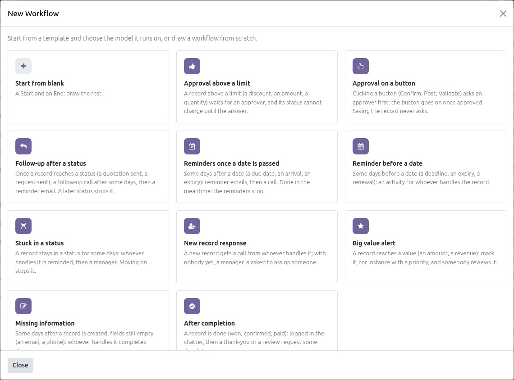
New Workflow: start from blank, from a generic template, or from one of your own.
Template
What it does
Approval above a limit
A record above a limit (a discount, an amount, a quantity) waits for an approver, and cannot change status until the answer.
Approval on a button
Clicking Confirm, Post or Validate asks an approver first; once approved, the next click goes on.
Follow-up after a status
Once a record reaches a status, a follow-up call after some days, then a reminder email. A later status stops it.
Reminders once a date is passed
Some days after a date (a due date, an expiry): reminder emails, then a call.
Reminder before a date
Some days before a date (a deadline, a renewal): an activity for whoever handles the record.
Stuck in a status
A record stays in a status for some days: its owner is reminded, then a manager.
New record response
A new record gets a call from whoever handles it; with nobody yet, a manager is asked to assign it.
Big value alert
A record reaches a value (an amount, a revenue): a mark, a priority, somebody to review it.
Missing information
Some days after creation, fields still empty (an email, a phone): whoever handles it completes them.
After completion
A record is done (won, confirmed, paid): a note in the chatter, then a thank-you or a review request.
Pick one, choose the model under Runs on (the models it is ready for are offered
as buttons), and fill in its settings: the fields are guessed for you. The chart on the right
follows every change. Click Create and Open the Designer: the workflow is
created as a draft.
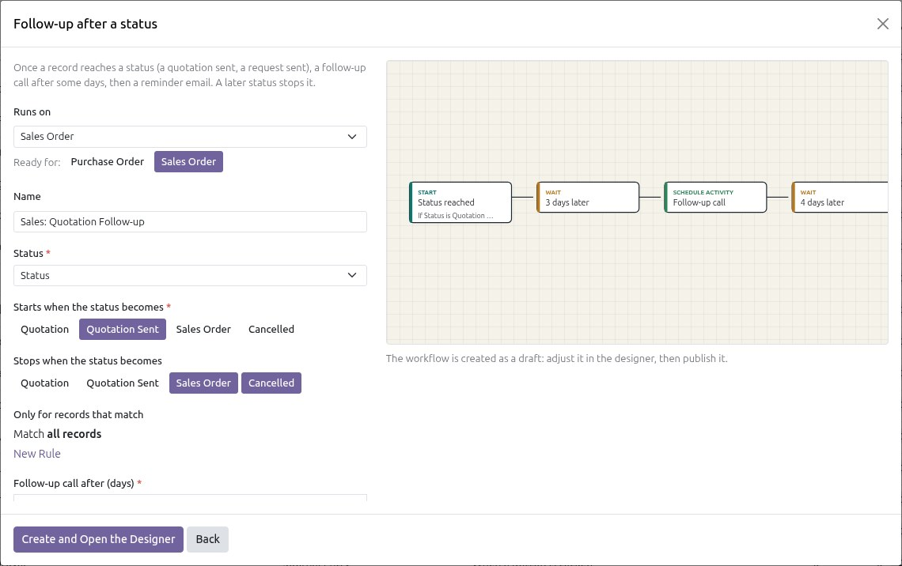
Follow-up after a status, on quotations: starts when sent, stops when confirmed or cancelled.
2.3 Ready-made workflows for your apps
For known models the settings come ready. These are also the demo workflows:
App
Workflows
Sales
Discount Approval, Quotation Follow-up, Order Thank-you, Expired Quotation
CRM
New Lead Response, Big Opportunity, Closing Date Passed, Won Opportunity
In the gallery, Start from blank opens the workflow form: give it a
Name and a Model, save, then click Open Designer.
The chart starts with a Start and an End: draw the rest.
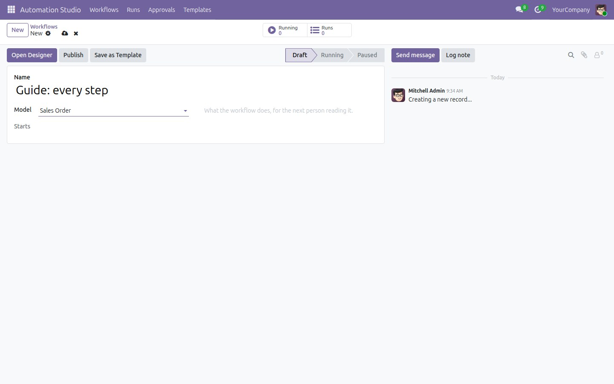
A blank workflow: name, model, then Open Designer.
Part 3
The designer
3.1 The four areas
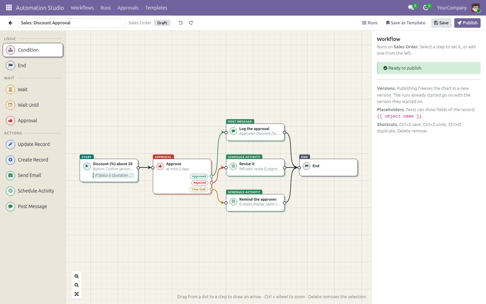
Sales: Discount Approval in the designer: palette, chart and the workflow panel.
Area
What it holds
Toolbar
The name, the model, the state (Draft, Running v3, Paused, Not published, Unsaved), undo and redo, and Runs, Save as Template, Save, Pause, Publish.
Palette
The steps, in three groups: Logic (Condition, End), Wait (Wait, Wait Until, Approval) and Actions (Update Record, Create Record, Send Email, Schedule Activity, Post Message).
Chart
The steps and arrows. Drag to pan; zoom and fit with the buttons at the bottom left.
Panel
The settings of the selected step or arrow; with nothing selected, the workflow itself and what is left to fix.
3.2 Adding steps and arrows
Add a step: drag it from the palette onto the chart, or click it to add it
after the selected step. With an arrow selected, it is inserted in the arrow.
Draw an arrow: drag from the dot of a step's exit to another step. Click an
arrow, then drag its end to move it.
Edit a step: click it and use the panel. Name on the chart is the text
shown in the box.
Steps added one after the other by clicking the palette: Start, Condition, Wait…
A step with no arrow on the exit it takes ends the run there, like an End.
3.3 What is left to fix
The chart is checked as you draw. Click an empty part of the chart: the panel lists, under
To fix before publishing, each step and what it misses. Steps with a problem
show a red mark. A workflow with errors cannot be published, and a loop with no wait in it is
refused.
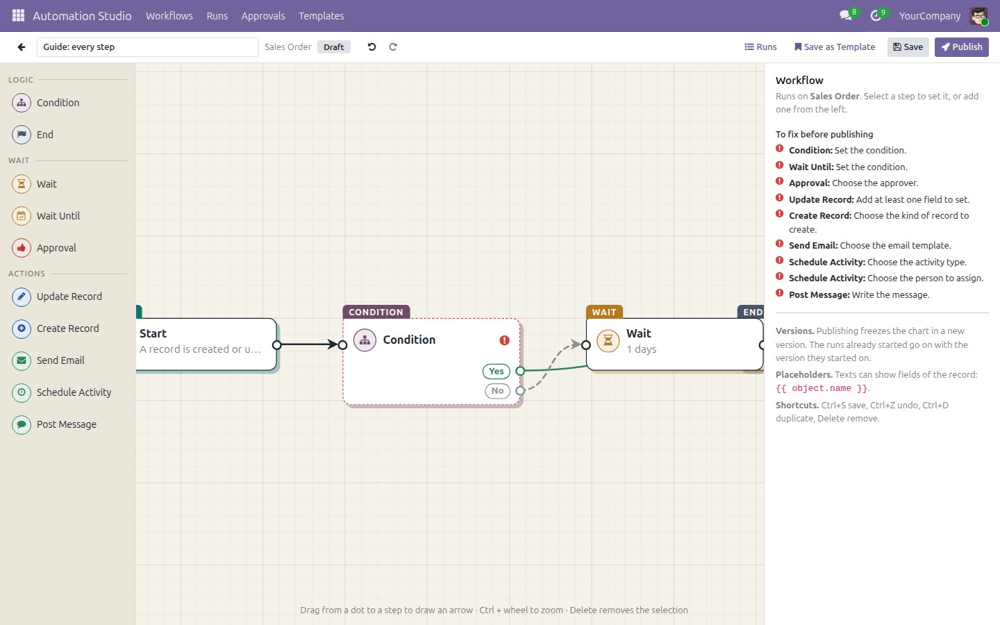
The workflow panel: each step and what it still needs.
Part 4
The Start: when a workflow begins
4.1 The five ways to start
Click the Start and choose under Starts when:
Starts when
Set also
A record is created
—
A record is created or updated
Watched fields: only a change of these starts it (none: any change, of the lines too). Only when this becomes true: it starts when the record starts to match, not at every change while it matches.
A date of the record comes
The date field, and how long before or after it (e.g. 3 days after the due date).
A button is clicked
The button of the form (Confirm, Post, Validate…) and the watched fields. Used for approvals before a button goes on (8.2).
Someone starts it from the Action menu
— It appears in the Action menu of the records.
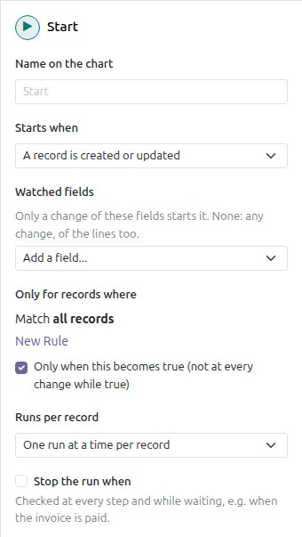
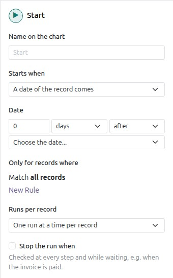
The Start, on a change of the record (left) and on a date (right).
4.2 Which records, how many runs, when to stop
Setting
Meaning
Only for records where
A filter: only matching records start a run, e.g. Total > 10,000.
Runs per record
One run at a time per record (default), Only once per record, ever, or A new run every time.
Stop the run when
A condition checked at every step and while waiting: the run stops as soon as it holds, e.g. the invoice is paid, the quotation is confirmed.
The chart shows the Start's condition in words under its name.
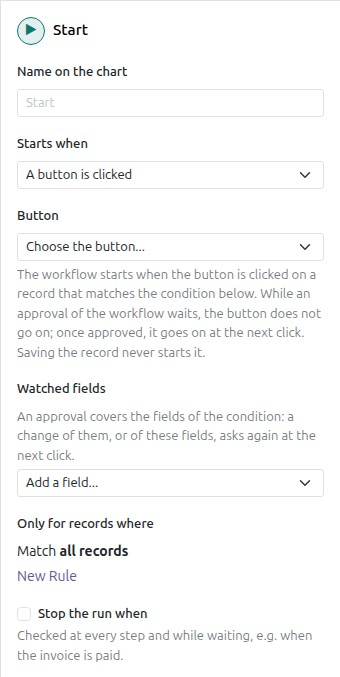
A Start on a button: the button, the watched fields, the filter.
Part 5
Logic and waiting steps
5.1 Condition and End
Condition checks the record against a filter (The record matches):
matching records leave by Yes, the others by No.
End ends the run.
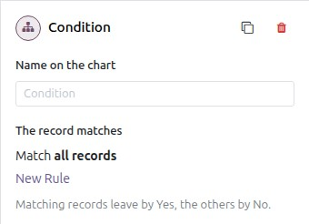
Condition: matching records leave by Yes, the others by No.
5.2 Wait
For a time: a number of minutes, hours, days, weeks or months.
Until a date: a date of the record, before or after it; a date already past
goes on at once.
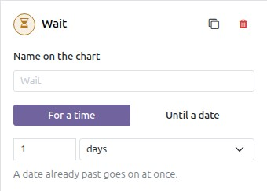
Wait: for a time, or until a date of the record.
5.3 Wait Until
Waits until the record matches a filter, checked every few minutes, then leaves by
Met. With a Time limit, a run still waiting when it runs out
leaves by the Time limit exit instead: send a reminder, escalate.
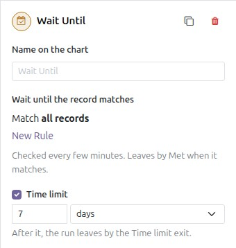
Wait Until, with a time limit of 7 days.
5.4 Approval
The run waits for a person's answer, and leaves by Approved,
Rejected or Time limit.
Setting
Meaning
Approver
A user, or The user of a field (the salesperson's manager, the responsible of the record).
Question, Details for the approver
What the approver reads, with placeholders: Approve {{ object.display_name }}.
Time limit
After it, the run leaves by the Time limit exit.
Only the approver can answer
Off: administrators can answer for the approver, who is told. On: only the approver.
Block the record until it is answered
These fields (the status by default, so the record cannot be confirmed or sent) or Any change.
The approver gets an activity, and answers on the record or in Automation Studio, Approvals (part 8).
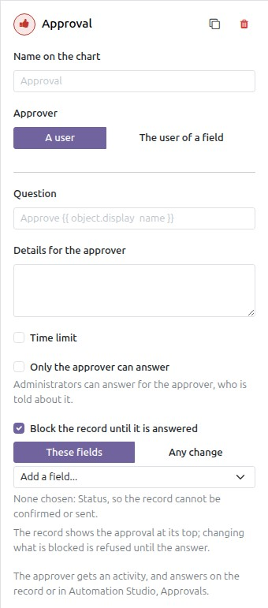
Approval: approver, question, time limit, and what is blocked while it waits.
Part 6
Action steps
6.1 Update Record and Create Record
Update Record sets fields of the record. Click Add a field and choose how
to fill it:
Mode
Example
Set to
Priority = High; Tags = VIP.
Copy from
Responsible = the Salesperson of the record.
Today plus
Follow-up date = today + 7 days.
Clear
Empty a field.
Create Record creates a record of another model (a task, a lead, an activity),
sets its values the same way, and links it back to the record by a field you pick
(Link it to the record by).
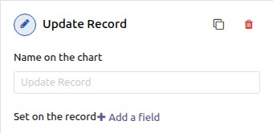
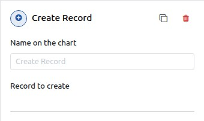
Update Record and Create Record.
6.2 Send Email, Schedule Activity, Post Message
Step
Settings
Send Email
An email template of the model; sent to the template's recipients and logged in the chatter.
Schedule Activity
Activity type, summary, note, assigned to a user or the user of a field, due in a number of days.
Post Message
A message in the chatter; ticked, it is sent to the followers, otherwise it is an internal note.
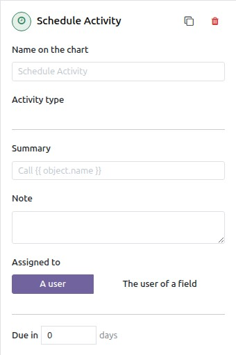
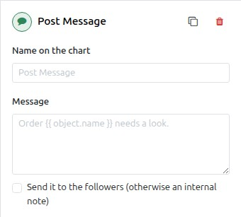
Schedule Activity and Post Message.
A model without a chatter cannot take Post Message, and one without activities cannot take
Schedule Activity: the panel says so.
6.3 Placeholders
Texts (summaries, notes, messages, approval questions) can show fields of the record:
{{ object.name }} – the record's name or number
{{ object.display_name }} – its full name
{{ object.partner_id.name }} – a field of a linked record
Part 7
Publishing and versions
Save keeps the chart as a draft and checks it again.
Publish freezes the chart in a new version and starts the workflow: new
records start runs from now on. The toolbar shows Running v1, v2…
Pause stops new runs from starting; runs already started go on.
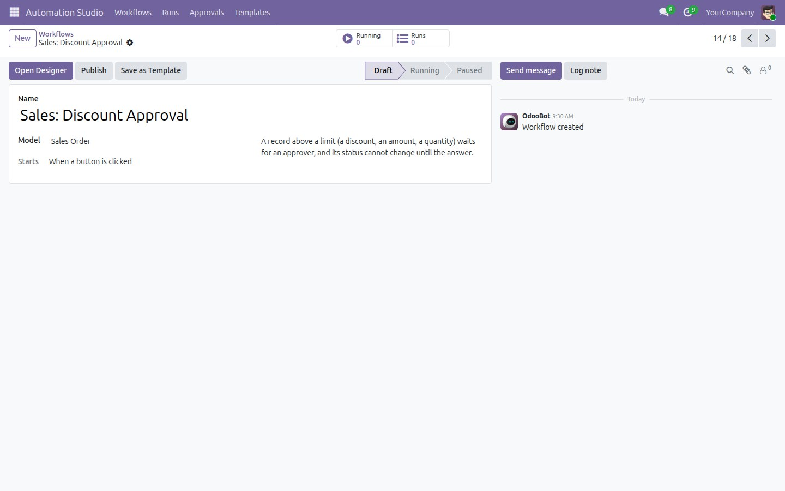
The workflow form: Open Designer, Publish, Save as Template, its runs and versions.
Changing a running workflow is safe
Runs already started go on with the version they started on. Edit the chart, publish it as a
new version, and only new runs take it. Not published in the toolbar means the chart
has changes not yet published.
The records of a model with a running workflow get a Workflow Runs entry in their
Action menu.
Part 8
Approvals in practice
8.1 What the approver sees
The approver gets an activity. On the record, a banner at the top says who it waits for, with
Approve and Reject for the approver and Details
for everyone. The chatter notes the question and the answer.
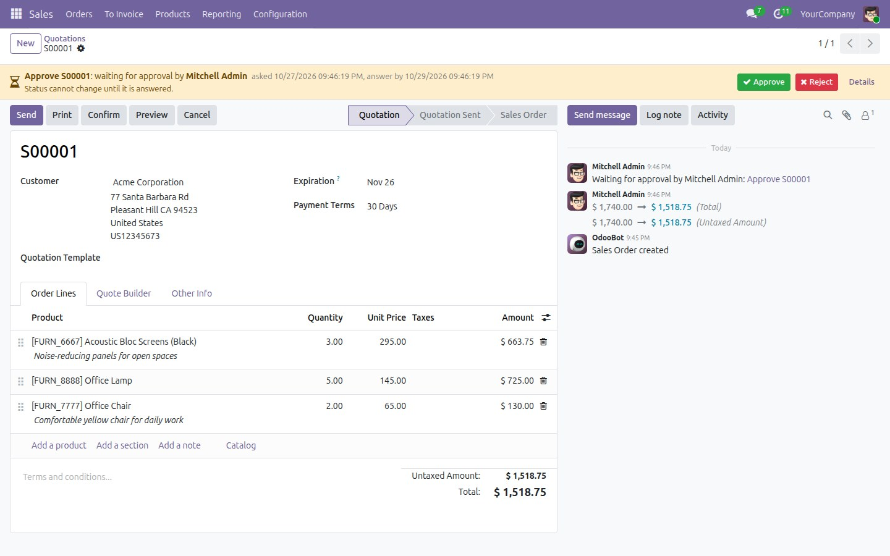
A quotation waiting for approval: the banner with Approve and Reject.
While it waits, the record can be blocked (5.4): trying to confirm it then says why.
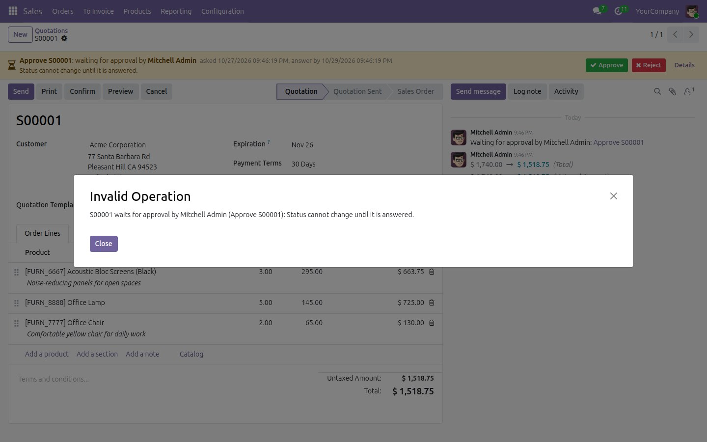
Confirming a quotation that waits for approval: refused until it is answered.
8.2 Approval on a button
With a Start on a button (4.1), the approval is asked when the button is clicked, never when the
record is saved. While it waits, the button does not go on; once approved, the next click goes
on. An approval covers the values of the fields of the condition and of the watched fields: if
they change, the next click asks again. Only a click is checked, never Odoo code calling the
same method.
8.3 The Approvals menu
Automation Studio › Approvals lists the approvals with their
record, workflow, approver and deadline, filtered on Mine and To Approve. Answer
with Approve or Reject on the line. Administrators can answer
for the approver unless the step keeps the answer to the approver alone; the chatter then says
on whose behalf.
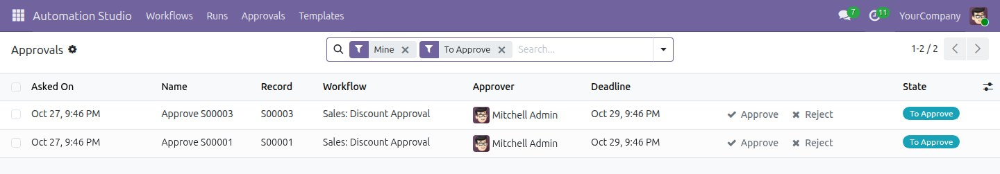
Approvals: mine, to approve, answered from the list.
Part 9
Following the runs
Automation Studio › Runs lists every record going through a
workflow: the workflow, the record, the current step, when it continues, and its state.
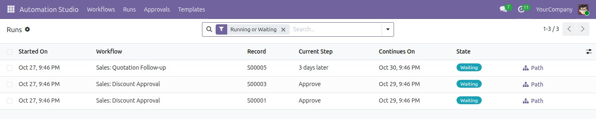
Runs: the record, its current step and when it continues.
State
Meaning
Running
Going through its steps.
Waiting
On a Wait, Wait Until or Approval.
Done
Reached an End or a step with no arrow on its exit, or stopped by Stop the run when.
Failed
A step failed. It was rolled back and the run stopped; the change that started the run is never undone.
Cancelled
Cancelled by hand with Cancel Run.
On a run: Show on Chart draws the path the record took, Retry
runs the failed step again, Cancel Run stops it, and the run's
Steps tab lists each step with its time.
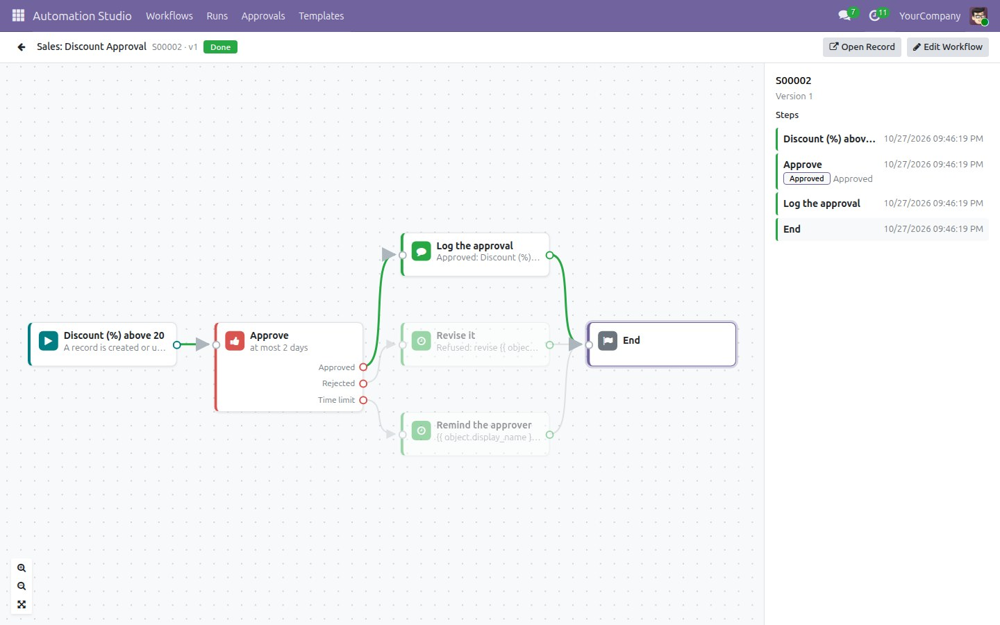
Show on Chart: the path of one quotation, step by step.
Waiting runs are continued by the scheduled action Automation Studio: Continue Waiting
Runs, every 5 minutes and at the exact time of a wait.
Part 10
Your own templates
Save as Template, on a workflow or in the designer, keeps its chart, for your
company or for every company. It appears under Your templates when creating a new
workflow.
Automation Studio › Templates lists them. Export
saves one as a file; Import loads it into another database. Users, activity
types, email templates and the records the steps set are found again by external id or name;
those missing are listed on the template and pointed out in the designer.
Test, then move
Build and try a workflow on a test database, save it as a template, export it, and import it
on the live database.
Part 11
Workflows for common needs
Each one starts from a template (part 2) and takes a few minutes.
Need
How
Discount above 20% needs approval
Template Approval above a limit on Sales Order, number Order Lines > Discount, limit 20, approver the sales manager. Publish.
Purchase above 5,000 needs approval on Confirm
Template Approval on a button on Purchase Order, button Confirm Order, condition Total > 5,000.
Follow up quotations
Follow-up after a status on Sales Order: starts when Quotation Sent, stops on Sales Order or Cancelled; a call after 3 days, a reminder email after 4 more.
Chase overdue invoices
Reminders once a date is passed on Journal Entry (customer invoices), date Due Date; reminder emails every 7 days, then a call. Stop the run when the invoice is paid.
Leads must get a call the same day
New record response on Lead: an activity for the salesperson, or a manager when none is set.
Nothing stays stuck
Stuck in a status: remind the owner after 5 days, the manager after 3 more.
Complete contacts
Missing information on Contact: email or phone empty after 2 days, an activity for the salesperson.
Say thank you
After completion on Sales Order: a note when confirmed, then a thank-you email.
After publishing, try it on one record and open Runs to see it go through the chart.
Part 12
When something looks wrong
12.1 The usual questions
What you see
Why, and what to do
Publish is refused
The chart has errors: click an empty part of the chart and fix the list under To fix before publishing.
No run starts
The workflow is a draft or paused, the record does not match Only for records where, or Runs per record allows no new run. For created or updated, check the watched fields and Only when this becomes true.
A wait does not continue on time
Waits are checked by the scheduled action every 5 minutes: check that scheduled actions run on your server.
A run is Failed
Open it: the failed step says why (a missing value, a deleted template). Fix it, then Retry.
A change made the old runs behave differently
They do not: runs keep their version. Only new runs take the new one.
The approver cannot see the app
They need no level: they answer from the activity and the banner of the record.
Confirm is refused on a record
It waits for approval and is blocked: see the banner, or the Approvals menu.
12.2 How it works underneath
The Start of the published version becomes an Odoo Automation Rule whose server action, of the
type Start Workflow, starts the runs; a manual Start is a server action in the Action
menu. Pausing removes them.
A Start on a button needs neither: clicking a button asks the published workflows of the model
before the button runs.
Template files are JSON; ids inside conditions are kept as they are.
Uninstalling removes the workflows with the Automation Rules and Action menu entries that publishing made.
12.3 Getting help
Write to odoomates@gmail.com with your Odoo version, a screenshot of the chart and,
for a failed run, the message of its failed step. Feedback is welcome: it makes the app better.